Drone
 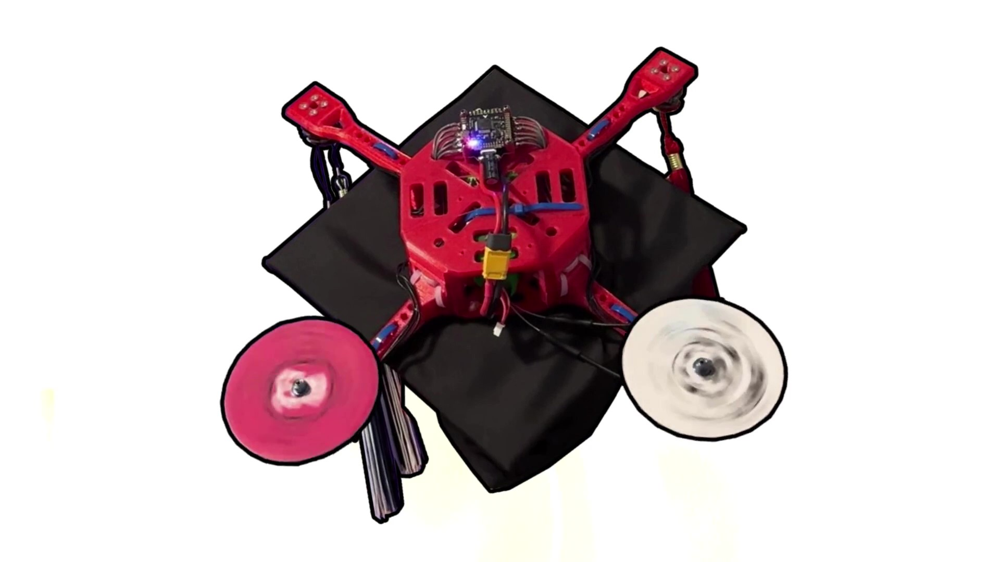
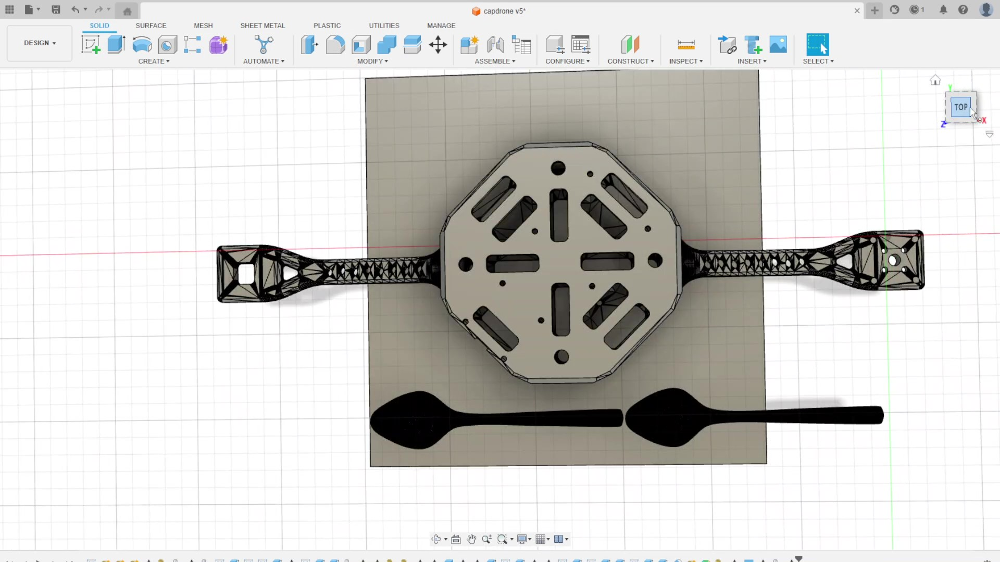
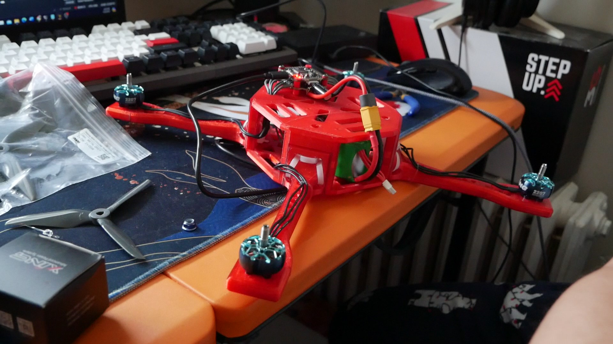
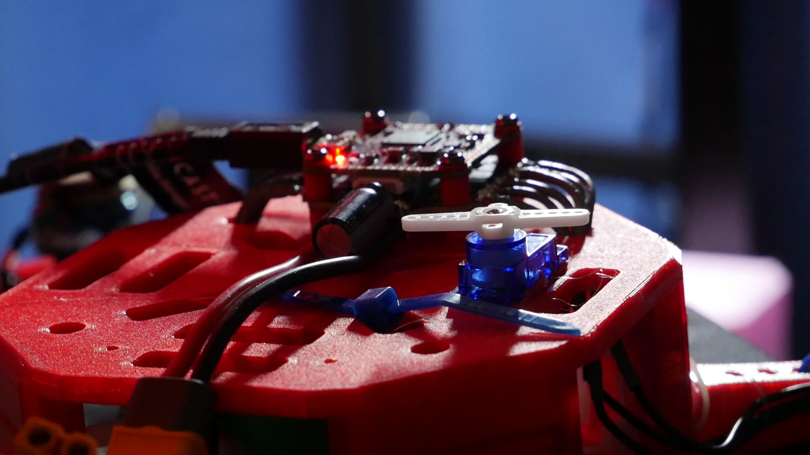
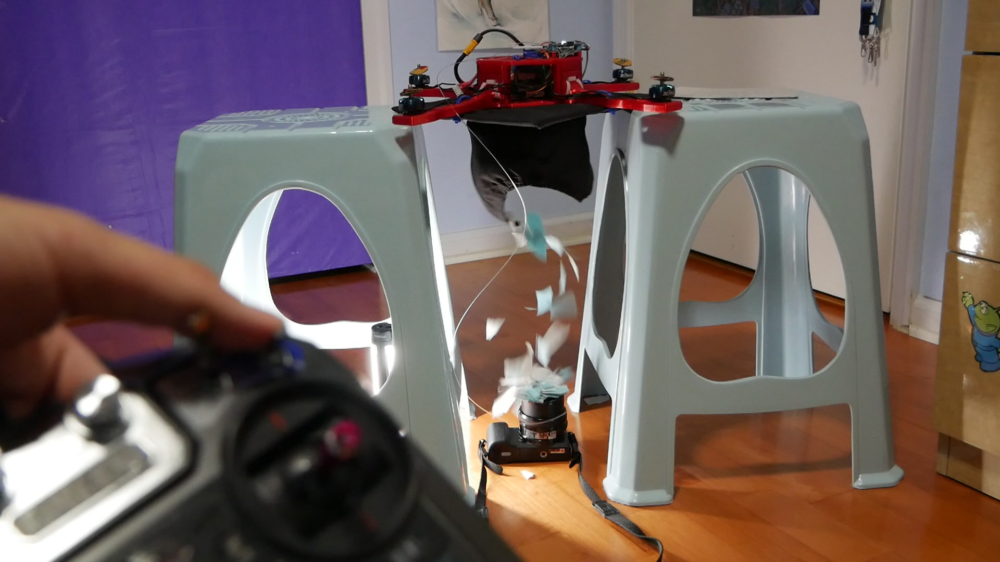
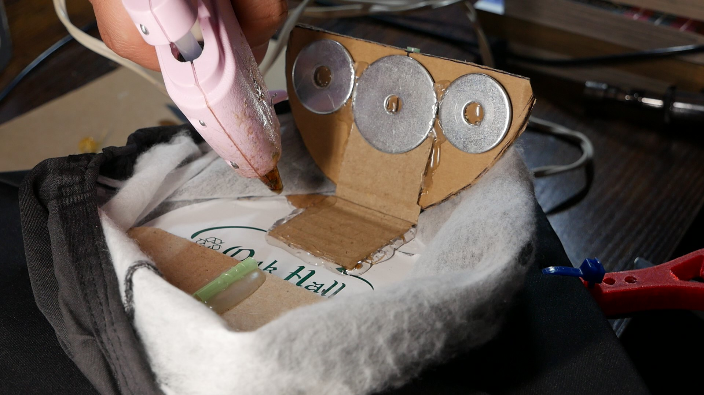
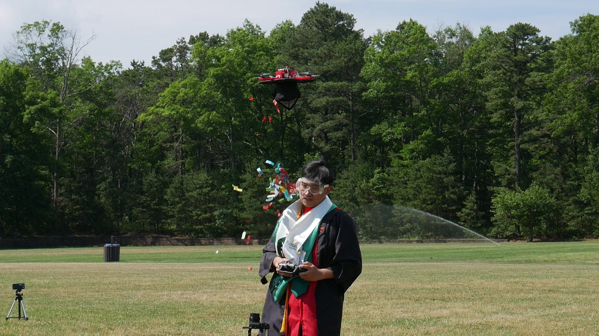
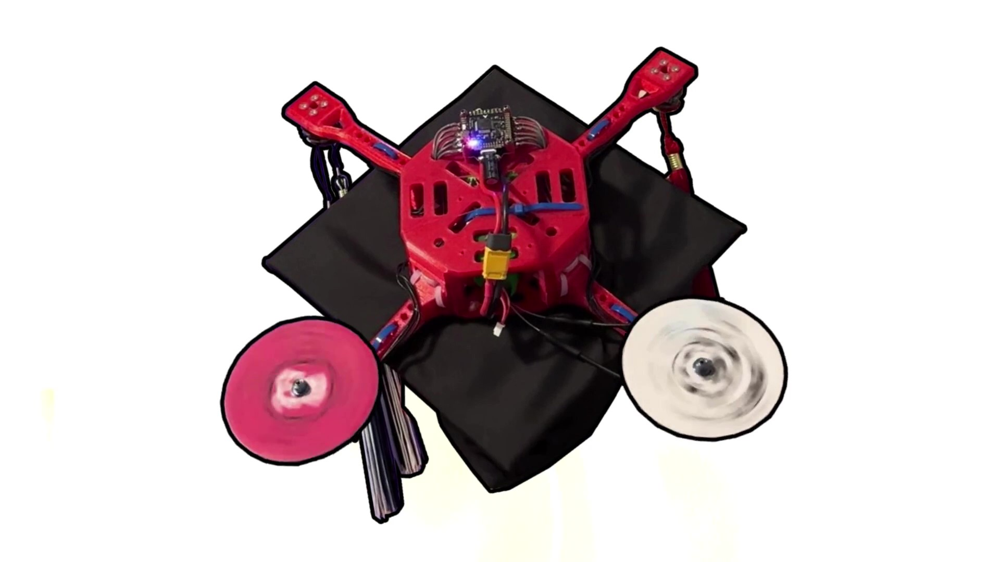
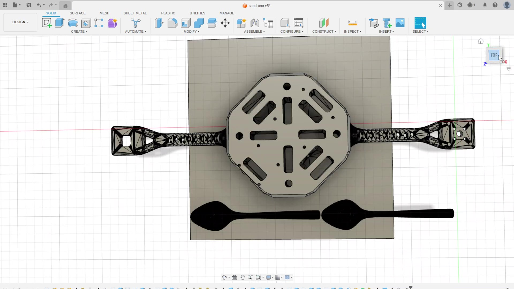
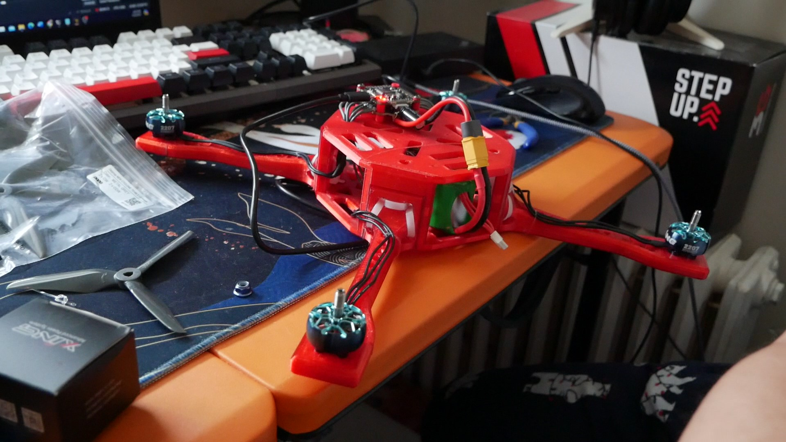
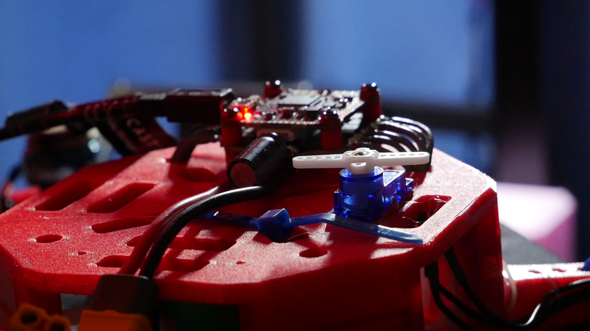
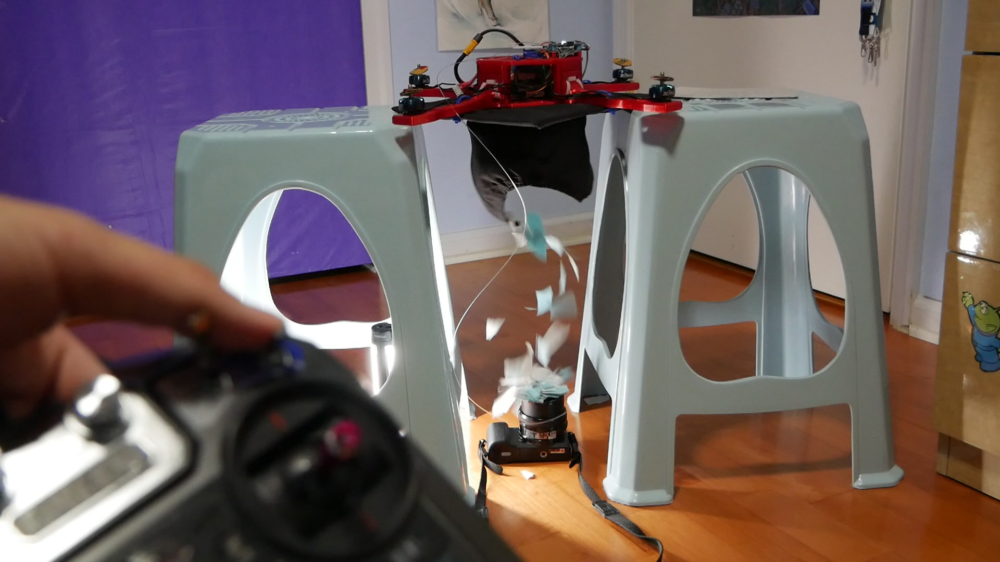
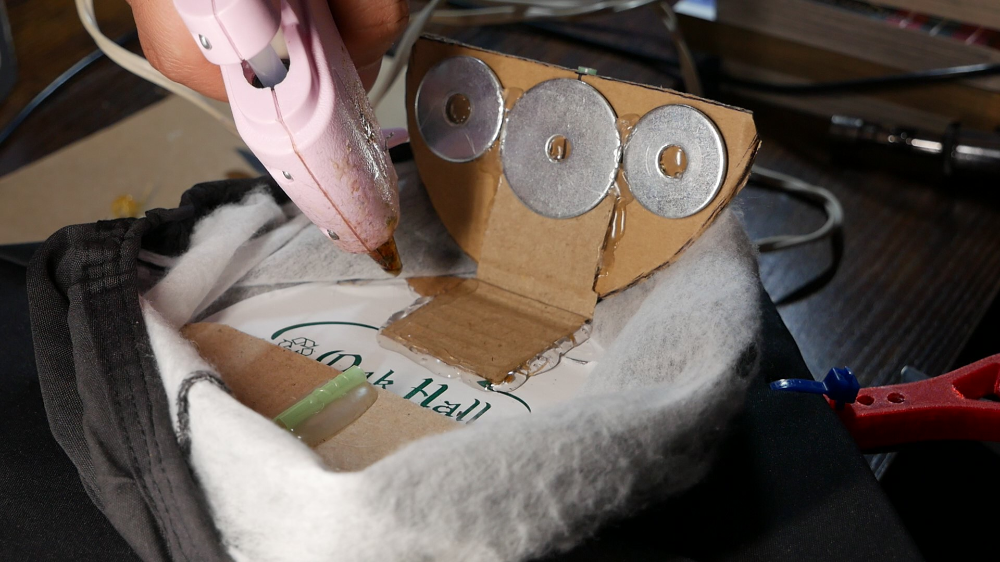
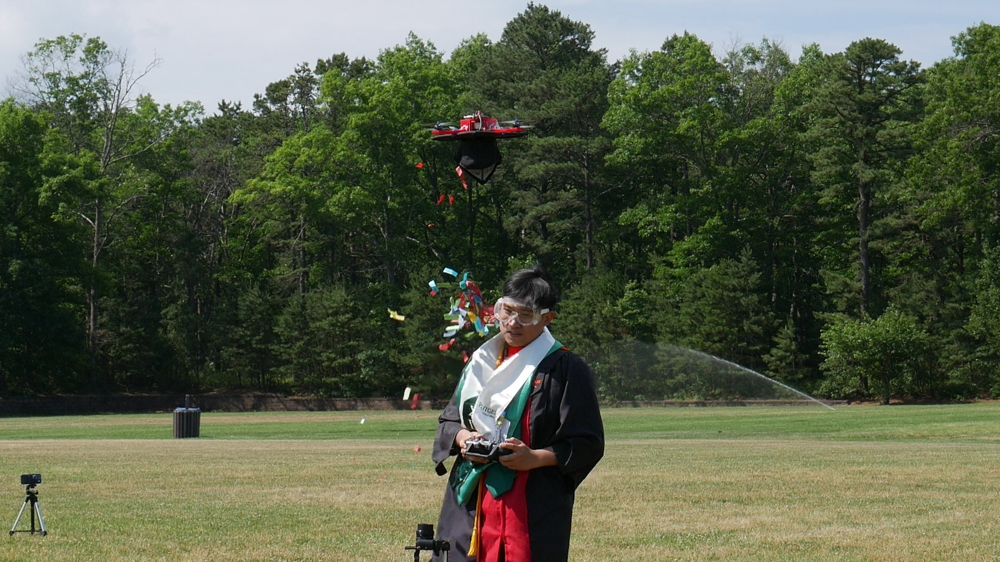
> I built this drone as a decoration for my 2024 graduation cap. It uses the xing2 2207 2755kv motors to drive the 5in. props, powered by a 4s 120c LiPo battery. The drone was configured in the Betaflight software. The body was 3D printed and zip tied together and to the cap.
> As an extra feature, a trap door was installed in the cap to release confetti. A servo was controlled by a toggle switch on the transmitter, which would pull on a fishing line releasing the trap door.
> The drone itself flew well, however, there was too much flex within the 3D-printed body which caused the PID system to be unable to correct for any misalignments as corrections caused different alignment errors. To correct this, the PID sensitivity could have been tuned down, the maximum throttle could have been diminished, or a new frame could have been reinforced with carbon fiber for stability. The drone had fallen from several meters in the sky, causing irreparable damage before corrections could be made. Future attempts will be made.
> Some challenges to note was trying to balance the weight within the drone, I figured that if I couldn't balance it on my head, it would be difficult for the drone to balance in the air. Betaflight is an intuitive tool, however, only some of the older versions had the specific functionalities to make my drone work, for example, I had to use a version that was 3 revisions old to have the drone cooperate with my transmitter/receiver. Since the frame is haphazardly strapped to a flimsy graduation cap, the calibration would always drift by some amount.
> Overall, the project was highly enjoyable, and if I had the chance to do it again, I definitely would!